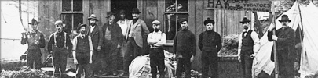

La présence des Noirs au Canada remonte au début de la colonisation. Aux quelques-uns arrivés avec les premiers Européens sont venus s’ajouter, en 1782, 3 000 esclaves auxquels le général britannique Guy Carleton avait accordé un certificat d’affranchissement et le passage vers le Canada en reconnaissance de leur engagement aux côtés des Anglais durant la guerre d’indépendance américaine. En 1835, l’esclavage était aboli dans tout l’Empire britannique. La plupart des Noirs entrés au Canada dans les trente années qui suivirent fuyaient l’esclavage aux États-Unis, mais une fois celui-ci aboli, en 1865, nombre d’entre eux sont retournés vivre aux États-Unis. L’idylle fut de courte durée et avant la fin du 19e siècle, l’immigration noire avait repris, mue par les injustices sociales et les inégalités de droit qui n’avaient cesse, notamment dans le Sud américain encore à majorité rural et aux prises avec la pauvreté et où la ségrégation entre Noirs et Blancs était rigoureusement exercée et la violence raciale, monnaie courante. Le Canada n’avait pas de lois ségrégationnistes telles que les lois de Jim Crow alors en vigueur aux États-Unis, mais des pratiques ségrégationnistes et discriminatoires avaient cours à plusieurs endroits.
En 1901, on recensait 17 437 Noirs au Canada. Au Yukon, ils étaient 99 sur une population de quelque 30 000 âmes, la plupart des nouveaux venus, comme le reste, attirés par la perspective de faire fortune au Klondike durant la ruée vers l’or. Pour plusieurs, le Klondike était synonyme d’horizons nouveaux, l’endroit où l’on pouvait tout rêver et tout entreprendre – ou presque –, peu importe sa race, son origine ethnique, son statut social ou sa situation économique. Les Noirs ont gagné leur vie comme domestiques, barbiers, serveurs, musiciens, entrepreneurs, ouvriers et mineurs.
« Le mineur J.H. Woolfork, un homme de couleur, exploite diligemment la concession qu’il a jalonnée face à la concession no 44 et en tire un bon revenu. »
(ci-dessus)
Cet homme, un boxeur surnommé Black Prince, et le chien Banko étaient les « mascottes » du saloon Monte Carlo, à Dawson, vers 1899.
Archives du Yukon, collection Clayton Betts, nº 9431

Mineurs au camp 32 Below, au ruisseau Hunker, vers 1900. L’homme noir semble être le cuisinier.
Archives du Yukon, fonds Adams et Larkin, nº 9106
Archives du Yukon, collection de l’Université de Washington, nº 1346

Serviteur noir à un banquet donné par le consul américain, le 4 juillet 1899.
Photo reproduite avec la gracieuse permission
des Archives de
la Colombie-Britannique, nº C-04980
Cliquer ici pour voir le site Web des Archives de la
Colombie-Britannique
et la description de cette photo.

Article nécrologique : Klondike Nugget, 16 mai 1901
Sam Agee (en avant, à gauche) et les autres membres de l’équipe gagnante du championnat de hockey Renzoni, 1910.
Archives du Yukon, collection du Musée de Dawson, nº 6402
Sam Agee avec Joe et Otto.
Archives du Yukon, fonds Emil Forrest, 80/60, nº 499
Tombe de Roy, frère de Sam.
Archives du Yukon, collection Histoire des noirs, 2005/162, nº 1

Trois mineurs à côté d’un sluice, ruisseau Hunker, 1899.
Photo reproduite avec la gracieuse permission de la Bibliothèque de l’Université de Washington, Collection spéciale UW 22083
(ci-dessus, à gauche)
Archives du Yukon, GOV 418, nº 37918